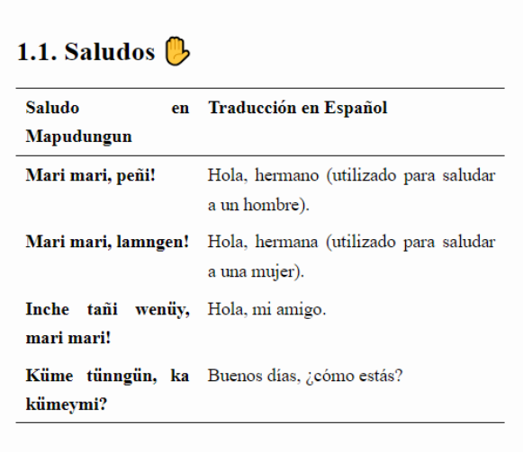
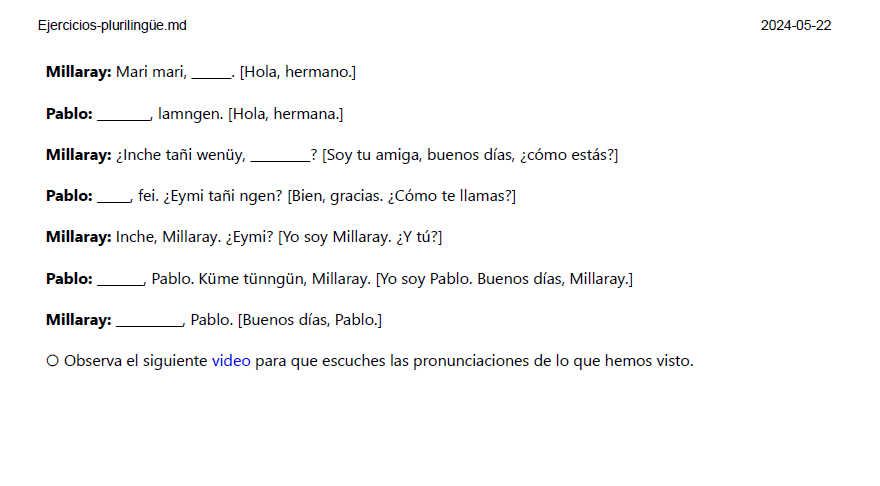
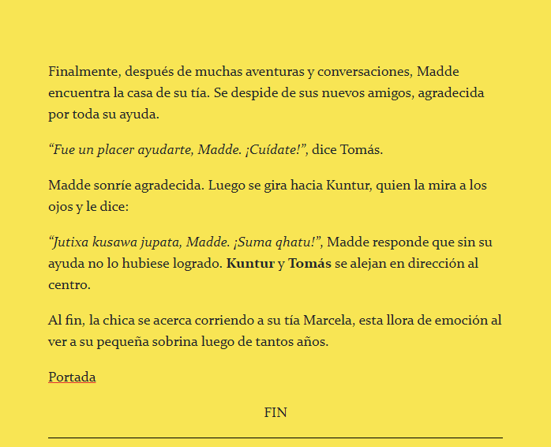
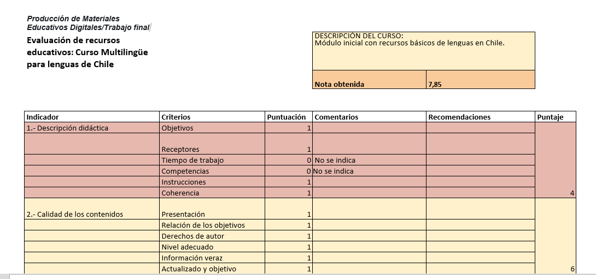

Presentación trabajo final de “Producción de
Materiales Educativos Digitales”
Stefanía Romero
Mayo, 2024
Chile Multilingüe
Chile
ÍNDICE
Objetivo
Estructura
EPUB
PDF
Twine
Autoevaluación
Conclusiones
1. Objetivo 🥇
Acercar a los hablantes a algunas variedades lingüísticas que
cohabitan en Chile.
Desde el español como lengua vehicular, se espera que los estudiantes
reconozcan términos básicos de: el Mapudungún, lengua del pueblo
Mapuche; el Aimara, lengua de un pueblo originario del altiplano andino;
y Kreyòl o haitiano criollo, lengua de los inmigrantes haitianos.
2. Estructura
Este curso cuenta con:
Un epub con información básica respecto de
los saludos, despedidas y frases de cortesía.
Un PDF con ejercicios para practicar.
Una historia de Twine para ejemplificar el
uso de las lenguas en un contexto narrativo.
Esta presentación en reveal.js.
3. EPUB
Epub
Dentro
del EPUB podrás encontrar el contenido que necesitas para realizar el
curso.

ejemplo
4. PDF
PDF
Dentro
del PDF podrás encontrar ejericios que te servirán para practicar lo
aprendido.

Ejemplo
5. Twine
Dentro
del Twine podrás encontrar un ejemplo de las lenguas en uso.

Ejemplo
6. Autoevaluación
Autoevaluación
En
este apartado se realizó una autoevaluación respecto del curso
realizado, siguiendo la norma UNE 71362.

Ejemplo
El
puntaje obtenido fue de 7.8, lo cual indica que aún se debe trabajar en
el desarrollo de los cursos virtuales para crear un material de
calidad.
7. Conclusiones
Conclusión
Esta presentación abordó el trabajo que se realizó para la evaluación
final de la asignatura de Producción de Materiales Educativos Digitales.
Se abordó de modo somero el contenido, pues la finalidad es mostrar el
uso de las variados formatos que se abordaron en este curso, tales como
la generación de PDF e EPUB a partir de MARKDOWN. Del mismo modo, se
pudo apreciar la creación de recursos didácticos como TWINE. Por último
queda seguir trabajando para adquirir mayores competencias digitales y
así desarrollar material que cumpla con todos los puntos que propone la
norma UNE 71362.

)